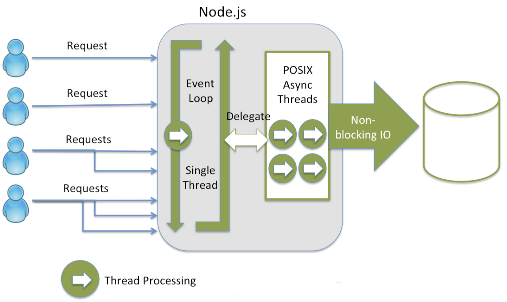
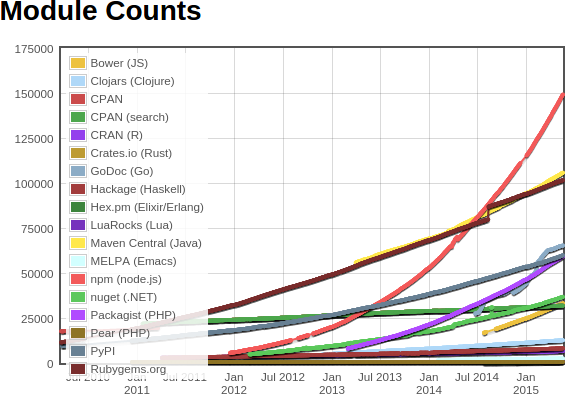

Instrutor:
Victor Hugo de Paiva Gonçales
Atualmente o JavaScript é uma das linguagens de programação mais populares, está presente em diversos ambientes tais como
browsers, desktops, servidores, mobile, microcontroladores, "internet das coisas", TV e etc...
No github JavaScript é de longe a linguagem mais
popular.
Neste Minicurso será abordado o JavaScript no Servidor, através de Node.js
Node.js é uma plataforma de desenvolvimento JavaScript para aplicações em rede(servidores), ideal para aplicações com milhares
de conexões simultâneas, é uma tecnologia open-source, multiplataforma (Mac, Windows, Linux), arquitetura orientada a eventos
e I/O não-bloqueante.
Noje.js foi criado em 2009 por Ryan Dahl, e é patrocinado pela empresa Joyent*. Utiliza o Google V8 como engine Javascript.
Node.js vem ganhando adoção de grandes empresas como
LinkedIn,
Wallmart,
Groupon,
Microsoft,
NetFlix,
BBC,
Paypal e
muitas outras
Node.js roda de forma assíncrona com I/O não bloqueante, seu código roda numa única Thread, mas as operações I/O assíncronas são feitas pelas Threads do S.O, É como se o Node ficasse em um loop esperando eventos do S.O, Node delega uma tarefa I/O para o S.O. e já faz outra coisa, ele não bloqueia aguardando resposta I/O, você deve delegar um callback para ser executado logo quando a tarefa I/O for concluída pelo S.O.

Utilizado para:
Não é ideal para tarefas que requerem muito processo da CPU.
O io.js é um fork do Node.js, iniciado pelos principais developers do Node.js. E traz as últimas melhorias da linguagem,
API e últimas atualizações do V8. Projeto tem como objetivo continuar o desenvolvimento do io.js sob um "modelo de governança
aberto" em oposição à administração corporativa. Nos primeiros meses já atraiu mais desenvolvedores ativos que o projeto
Node.js teve em toda a sua história.
UPDATE: em maio de 2015, o projeto Node.js e ios.js se juntaram e agora são "Node.js Foundation",
com patrocinadores como Linux Foundation, IBM, Microsoft, PayPal, Joyent e outros
A instalação do Node.js é muitos simples em todos os S.O.
Acesse: https://nodejs.org/download/
baixe e instale
next...next...next...
Após a instalação abra o prompt de comando e digite node
Node possui um sistema de módulos, que segue o padrão CommonJS, para carregar um módulo utiliza-se a função require( moduloId ), passando o caminho/id do módulo
var os = require("os"); console.log("total de CPU:" + os.cpus().length);
Uma vez carregados eles ficam em cache.
Tipos de módulos:
No require() quando passamos o nome do módulo:
var nomeDoModulo = require("nomeDoModulo");
Primeiro o node procura por um módulo nativo com este nome, caso não exista então ele busca na pasta node_modules, caso não encontre então ele busca na pasta node_modules superior e assim por diante até encontrar ou atingir a raiz do sistema. Quando passamos um caminho relativo ou absoluto node então busca exatamente este módulo.
var nomeDoModulo = require("./teste/teste2/nomeDoModulo");
Para criar um módulo apenas atribuimos para a propriedade module.exports
Exemplo:
//meu modulo
var xxxx = "teste";
module.exports = {
fazAlgo: function(){
return xxxx;
}
};
//ou
exports.fazAlgo = function(){
return xxxx;
};
Exemplo modulo com função construtora:
var MeuModuloComPrototype = function () {
this.teste = "teste....";
};
MeuModuloComPrototype.prototype.fazAlgo = function () {
return this.teste;
};
MeuModuloComPrototype.prototype.fazAlgoDiferente = function () {
return "fazAlgoDiferente";
};
module.exports = MeuModuloComPrototype;
NPM é o gerenciador de pacotes do node, com ele é possível instalar
módulos criados por terceiros. Atualmente devido a popularidade do Node.js, o NPM
é o gerenciador de pacotes com maior número de pacotes entre todos de outras principais linguagens.
Ele já vem instalado junto com o node.
www.npmjs.com

http://www.modulecounts.com/
É o arquivo onde contém as configurações de seu projeto/módulo,
ele é utilizado pelo npm.
{
"name": "nome-do-projeto",
"version": "1.0.0",
"description": "exemplo de projeto",
"main": "index.js",
"scripts": {
"comando": "ls -la",
"start" : "node app.js"
},
"dependencies": {
"primus": "*",
"async": "~0.8.0",
"express": "4.2.x",
"winston": "git://github.com/flatiron/winston#master"
}
}
Para controle do número da versão utiliza-se o padrão 'Semantic Versioning'
X.X.X
MAJOR.MINOR.PATCH :
é incrementado da seguinte forma:
~ atualizações a nível de Patch
^ atualizações a nível de Minor
Patch releases: 1.0 or 1.0.x or ~1.0.4
Minor releases: 1 or 1.x or ^1.0.4
Major releases: * or x
http://semver.npmjs.com
GIT é um sistema de controle de versão, atualmente considerado o melhor existente e o mais
utilizado nos projetos.
Hoje em dia é fundamental qualquer desenvolvedor ter pelo menos o mínimo de conhecimento
de GIT.
Todas as operações que são assíncronas necessitam de um callback,
que será chamado quando a operação terminar.
Convenciona-se no node que o primeiro parametro do callback deve
ser o motivo do erro caso haja, depois os outros parâmetros podem ser qualquer coisa.
fs.readFile("message.txt", function (err, conteudo) {
if (err){
throw err;
}
console.log("conteudo do arquivo: " +conteudo);
});
Promises possibilita trabalhar com operações assíncronas de uma outra maneira.
function ler(arq) {
return new Promise(function (resolve, reject) {
fs.readFile(arq, function (err, conteudo) {
if (err) {
reject(err);
return;
}
resolve(conteudo);
});
});
}
ler("teste.txt").then(function (conteudo) {
console.log("PRO" + conteudo.toString());
}).catch(function (err) {
console.log(err.message);
});
O módulo 'events' possibilita nos criarmos nossos próprios eventos.
var EventEmitter = require("events").EventEmitter;
var objEmitter = new EventEmitter();
objEmitter.on("fezAlgo", function(a, b, c) {
console.log(a+b+c);
});
// Emit
objEmitter.emit("fezAlgo", "aaa" , "bbb" , "ccc");
Com streams podemos manipular o fluxo de leitura/escrita de uma maneira mais performática.
var fs = require("fs");
var readableStream = fs.createReadStream("teste.txt");
var data = "";
readableStream.on("data", function(chunk) {
data += chunk;
});
readableStream.on("end", function() {
console.log(data);
});
Com node você que cria o seu próprio servidor, usando o módulo http
var http = require("http");
var server = http.createServer(function (req, res) {
res.write(" oi ");
res.end("FIM");
});
server.listen(8000, function () {
console.log("servidor rodando na porta 8000");
});
Express é framework WEB, que facilita o desenvolvimento web com node, ele lida com views, rotas, cookies, sessions, e outras coisas de servidores.
npm install -g express
npm install express
//===========================
var express = require("express");
var http = require("http");
var app = express();
http.createServer(app).listen(8000);
Middleware, são 'funções' pré-processam a requisição, por exemplo: parse de cookies, session, querystring, filtros etc...
function middlewareX(req, resp next) {
next();
}
app.use(middlewareX);
O Express possibilita utilizar diversas engines de templates, devemos setar onde estão as views e qual engine iremos usar
app.set("view engine", "ejs");
app.set("views", "./views");
Para delegar as rotas usamos o verbo HTTP (get/post/put/delete), nos nomes dos métodos
app.get("/a", function (req, res, next) {
res.render("index", { xxxx : "oi index" });
});
app.post("/a/:id", function (req, res, next) {
res.render("exibir", { msg : "oi"});
});
Há vários tipos de módulos que oferecem suporte a base de dados (MySql, MSSQL, Oracle, MongoDB, PostgreSQL entre outros).
var mysql = require('mysql');
var connection = mysql.createConnection({
host : 'localhost',
user : 'root',
password : '123456'
});
connection.connect();
connection.query('SELECT nome FROM pesssoa ', function(err, rows, fields) {
if (err) {throw err;}
console.log('nome : ', rows[0].nome);
});
connection.end();
REST (REpresentational State Transfer) "Transferência de Estado Representacional",
é uma arquitetura de software para criação de API.
Utiliza os verbos HTTP.
Gera uma estrutura básica de um projeto express
npm install express-generator -g
express meu_app --ejs
WebSocket é um protocolo que permite comunicação bidirecional entre cliente/servidor web
| evento | descrição |
|---|---|
| connection | quando a conexão do cliente é estabelecida no servidor |
| message | quando servidor recebe um dado do cliente |
| error | quando ocorre erro na comunicação |
var WebSocketServer = require('ws').Server
var wss = new WebSocketServer({ port: 8080 });
wss.on('connection', function (ws) {
ws.on('message', function (dados) {
console.log("recebeu: " + dados);
});
ws.on('error', function () {
});
ws.send('oi client');
});
| evento | descrição |
|---|---|
| open | ocorre quando a conexão é estabelecida |
| message | quando cliente recebe um dado do servidor |
| error | quando ocorre erro na comunicação |
| close | quando a conexão fecha |
...